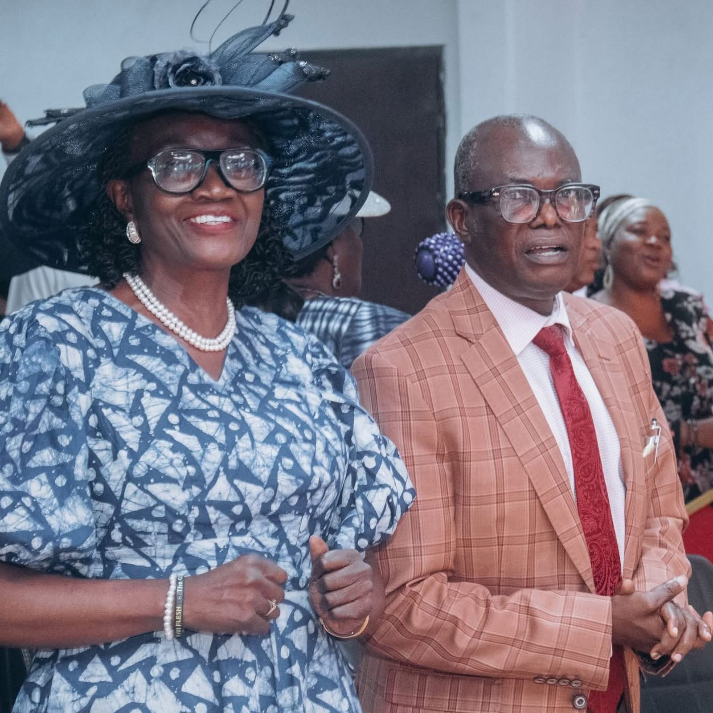

Pastor Wole & Pastor (Mrs.) Bose Obayomi
Pastor-in-Charge
Pastor Wole and Pastor (Mrs.) Bose Obayomi lead Fuller's Field. For over a decade they have given themselves to building a warm, Christ-centred church where people from every walk of life can meet God, heal and grow.
Pastor Wole teaches with a passion for purpose and spiritual growth. Pastor Bose cares for families, leads the women's fellowship and oversees our welfare work in the community.
Their prayer is for a church of disciples who do not just attend on Sundays, but carry God's love into their homes, workplaces and neighbourhoods.